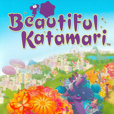

web installer

Builds the Nintendo Switch package of from your own copy. Everything runs in this browser: nothing is uploaded.
1. Choose your game
Nothing chosen yet.
2. Add the DLC (optional)
None.
3. Create the package
The shaders are made from your game's own files on all of this computer's cores, and the large archives are packed with LZ4 (the game reads them as they were). The zip downloads while it is written.
4. Copy it to the Switch
- If you have an older version, delete its
switch//game_rootfolder first: an unpacked archive left there is used instead of the packed one. - Extract the zip to the root of the SD card: it makes
switch//. - In Sphaira, find the game, press X to open Options and choose Install Forwarder. Make sure Address Space is set to 39-bit, choose Create Forwarder, then start the game from the Home Screen.